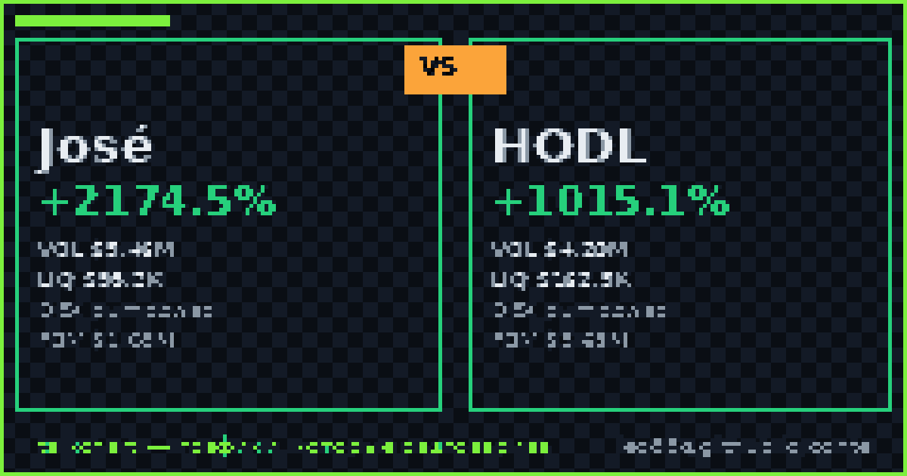

📈 TalkChart · каталог баттлов · [md для AI]
Срез данных: 2026-11-07 20:19 UTC · сеть Solana DEX

По ончейн-метрикам TalkChart: José опережает по ценовому импульсу (+2174.5% против +1015.1%). Краткосрочный фаворит по совокупности факторов: José.
| Параметр | José | HODL | Лидер |
|---|---|---|---|
| Суточный рост (24ч) | +2174.5% | +1015.1% | José |
| Объём 24ч | $5.46M | $4.20M | José |
| Глубина пула (TVL) | $98.2K | $162.5K | HODL |
| Отношение Объём / TVL | 55.6× | 25.8× | — |
| DEX биржа | pumpswap | pumpswap | — |
| Адрес пула | CdpY6qHV… | ANS69UDT… | — |
По ончейн-метрикам TalkChart: José опережает по ценовому импульсу (+2174.5% против +1015.1%). Краткосрочный фаворит по совокупности факторов: José.
У José суточный объём $5.46M при ликвидности $98.2K. У HODL объём $4.20M при ликвидности $162.5K.
José показал +2174.5% за сутки, в то время как HODL изменился на +1015.1%.
Сгенерировано фабрикой контента TalkChart. Обновляется каждые 4 часа. Не является финансовой рекомендацией.